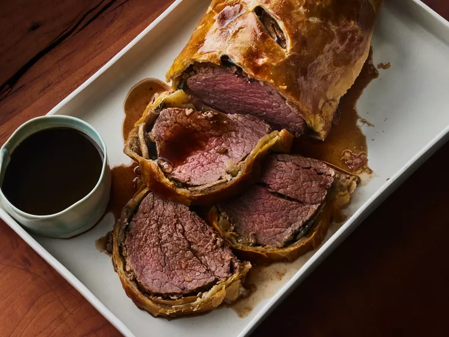

Beef Wellington

This beef Wellington recipe includes a rich red wine sauce. It's easier than you think to make and absolutely perfect for entertaining at Christmas or any time you want to impress your guests! The beef tenderloin is best served medium-rare.
This classic Beef Wellington recipe is perfect for any special occasion, from holidays to anniversaries.
How to Make Beef Wellington
You’ll find the full, step-by-step recipe below – but here’s a brief overview of what you can expect when you make homemade Beef Wellington:
Ingredients
- 2 ½ pounds beef tenderloin
- 4 tablespoons butter, softened, divided
- 2 tablespoons butter
- 1 onion, chopped
- ½ cup sliced fresh mushrooms
- 2 ounces liver paté
- salt and pepper to taste
- 1 (17.5 ounce) package frozen puff pastry, thawed
- 1 large egg yolk, beaten
- 1 (10.5 ounce) can beef broth
- 2 tablespoons red wine
How to Make Beef Wellington
- Cover the beef with butter and bake until browned.
- Sauté the onions and mushrooms in butter. Mix the paté with butter and seasonings.
- Spread the paté mixture over the beef and top with the veggie mixture.
- Roll out the pastry dough and place beef in the center.
- Fold up and seal all the edges, place in a baking dish, cut a few slits in the top, and brush with egg yolk.
- Bake according to the instructions until the pastry is golden brown.
- Make the red wine sauce and serve alongside the Beef Wellington.